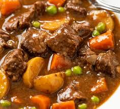

Slow Cooker Beef Stew

Desciption
This easy slow cooker beef stew recipe made with potatoes, carrots, celery, broth, herbs, and spices is hearty and comforting. You won't be slow to say 'yum'!
Ingredients
- Beef stew meat: 2 pounds beef stew meat, cut into 1-inch pieces
- All-purpose flour: ¼ cup all-purpose flour
- Salt: ½ teaspoon salt
- Black pepper: ½ teaspoon ground black pepper
- Carrots:4 medium carrots, sliced
- Potatoes:3 medium potatoes, diced
- Onion:1 medium onion, chopped
- Celery:1 stalk celery, chopped
- Worcestershire sauce:1 teaspoon Worcestershire sauce
- Paprika:1 teaspoon ground paprika
- Garlic:1 clove garlic, minced
- Bay leaf:1 large bay leaf
Steps
Here's a very brief overview of what you can expect when you make slow cooker beef stew:
- Gather ingredients.
- Place meat in slow cooker.
- Mix flour, salt, and pepper together in a small bowl. Pour over meat, and stir until meat is coated.
- Add beef broth, carrots, potatoes, onion, celery, Worcestershire sauce, paprika, garlic, and bay leave; stir to combine.
- Cover, and cook until beef is tender enough to cut with a spoon, on Low for 8 to 12 hours, or on High for 4 to 6 hours.
- Serve hot and enjoy!